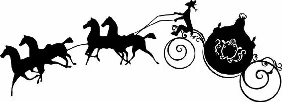

Ella nearly laughed out loud. Her fairy godmother? “But you can’t be.”
The beggar woman looked genuinely surprised. “Why not?”
“Because they don’t exist,” Ella replied. “They’re just made up. For children.”
“Now, you know that’s not true,” the woman replied. “Didn’t your own mother tell you she believed in them? And don’t say no, because I heard her.”
“You heard her?” Ella repeated.
Ignoring the young girl’s disbelief , Ella’s fairy godmother, for that was truly who she was (it must be clear to you now, my loyal reader), began to look around the garden. “We really ought to get started if you’re to make it to the palace in time.”
“In time for what?” Ella asked.
“The ball, child. The prince’s ball.”
Ella sighed. Fairy godmother or not, there was no way she could go to the ball. “Look at this dress,” she said, holding up the frayed ends of the pink gown. “It’ll take me days to mend it, and it won’t be marvelous then. And how would I get there? Even if I had something to wear? The coach has left and—”
The woman cut her off. “Oh, fiddle-faddle!” Then she paused. “First things first. Let me slip into something more comfortable.”
As Ella watched, the beggar woman lifted her walking stick into the air. It suddenly transformed from an old gnarled piece of wood into a thin silver wand. Then she began to wave the wand, causing a coil of silver glitter to descend over her head. When the glitter cleared, the beggar woman was gone, and in her place was a beautiful woman with light hair that hung about her face in tight curls.
The dark tattered cloak she had worn had been replaced with a white gown that sparkled in the moonlight. (Truly a spectacular transformation, if I do say so myself! I can’t even begin to tell you how itchy those beggar clothes can be. I’ve never been fond of burlap.) “That’s better,” the Fairy Godmother said when the transformation was complete. “Now, where was I?”
Ella didn’t know how it was possible or why the woman had chosen this night to appear, but she couldn’t deny it any longer: the woman was most definitely magical.
“Perhaps we should begin with the carriage,” the Fairy Godmother was saying. “To be honest, I hadn’t really thought about it, although I can’t imagine why not. Let’s see. . .” Spinning around, she looked over the garden. In the center, the fountain gurgled, while a greenhouse stood nearby, the strong smell of earth and flowers coming from inside. “What we need is something that sort of says ‘coach.’ ”
As her fairy godmother began to wander about, Ella followed. “That tub?” she suggested, pointing to an old claw-footed tub that was now used as a bird feeder. Her fairy godmother shook her head. “That barrel?” Again, her fairy godmother shook her head.
“I’m thinking fruits and vegetables,” the woman said. “Do you grow watermelons?”
This time it was Ella’s turn to shake her head.
“Cantaloupes?”
Again, Ella shook her head.
“Let me see,” her fairy godmother said, racking her brain. “What about a pumpkin?” she finally suggested.
Ella’s eyes lit up. “We do have pumpkins!” she said excitedly. “Here.” Quickly she led her fairy godmother into the greenhouse. Inside, a whole row of pumpkins grew.
Clapping her hands in delight, Ella’s fairy godmother began to inspect the pumpkins one by one. Several were far too small, others not quite ripe. Finally, she found one that seemed perfect. She tried to pick it up. But it was a rather large pumpkin and it didn’t budge. “Never mind. We’ll do it here.”
“Do what here?” Ella asked.
“Isn’t it obvious?” her fairy godmother asked, wiping dirt off her hands. “Turn the pumpkin into a carriage!”
“Oh,” Ella replied, as though this were something that happened to her all the time. She looked at the pumpkin and waited for the magical transformation. And then she waited some more. Finally, she snuck a glance at her fairy godmother. The woman’s eyes were closed in concentration. Feeling Ella’s gaze upon her, she opened one eye.
“Don’t hurry me,” she said. “I just wish I’d remembered you’d have to get there. . .”
(Side note: I should have brought a cantaloupe. They really are much easier to transform. Pumpkins can be so stubborn.)
“Shall I turn around?”
“It might be better . . .” her fairy godmother began. But then she shook her head. “Oh, for heaven’s sake. Let’s just have a go.” Pointing her wand at the pumpkin, she mumbled a few words, and a cloud of stardust blew out over the pumpkin. Then, as Ella watched in amazement, the pumpkin began to grow.
And it continued to grow. And it grew even more. It kept on growing until its sides pressed against the greenhouse’s glass walls so hard that they shattered, sending glass and wood flying.
“Is that what you meant to do?” Ella asked.
“Do you think it’s what I meant to do?”
Ella struggled to find something positive to say. After all, she didn’t want to hurt her fairy godmother’s feelings. “Well, it’s much bigger. Well done.”
“No need to patronize me, my dear,” her fairy godmother retorted. Then, as if to prove her mettle, she waved her wand in the air once more.
Ella let out a gasp as, in front of her eyes, the pumpkin once again began to transform. This time, it became the most beautiful carriage she had ever seen. Fragments of the broken greenhouse became its windows, the sides grew ornate decorations, and on top of the carriage, the pumpkin’s stem became an immaculate roof.
Satisfied, Ella’s fairy godmother began looking around the garden. “Now where are those mice?” she said. Spotting Jacqueline, Gus, and their children hiding under a nearby bush, she smiled kindly. “What do you think?” she asked them. “Will you help her?”
The mice poked their noses out from under the bush. Their whiskers wiggled up and down. The Fairy Godmother was pleased. “They said yes,” she said.
“They can talk?” Ella asked, the night growing stranger still. True, her mother had told her animals could talk and listen. And true, she had spent many a lonely night telling the mice of her dreams and hardships, but she hadn’t really thought they could understand her.
“Oh, certainly,” her fairy godmother replied. “And they are very good listeners, too. They have told me all about you.” Then, focusing her attention, she lifted her wand. In one smooth motion, she passed it over the family of mice.
As Ella watched in awe, the mice began to transform. Their faces and legs grew longer. Their haunches became more muscular and their thin tails were replaced by long hair.
Within moments, the mice were gone, and in their place stood four beautiful horses. Jacqueline had turned a fine white and gray, while Gus was midnight black. Their children, Jacob and Esau, were a stunning combination of the two.
The majestic creatures walked to the carriage and took their places in front. On her way, Jacqueline stopped and affectionately lowered her head toward Ella. Smiling, Ella patted the mare’s silky mane.
With the horses and carriage taken care of, it was time to find the coachman and the footmen who would care for the horses while Ella was inside the palace. Once more her fairy godmother turned to the garden for inspiration. Two lizards became the footmen, and a goose became the coachman. When that was finished, the Fairy Godmother clapped her hands together. “Now, everyone into place. There’s no time to be lost.” As the coachman clambered up to his seat and one of the footmen opened the carriage door, Ella hung back. “What now, my dear?” the Fairy Godmother said. “I don’t want to hurry you, but . . .”
Ella wrung her hands nervously. Her fairy godmother had already done so much. But… “My dress,” she finally said. “I can’t go in this dress.”
“What’s wrong with it?” her fairy godmother asked, tilting her head and looking over the gown.
“Well, it’s in pieces,” Ella replied, lifting a tattered shoulder.“Do you think you can mend it?”
“I’ll turn it into something new.”
Ella began to shake her head vehemently . “No, no!” she cried. “This was my mother’s, and I’d like to wear it when I go to the palace. It’s almost, well, it’s almost like taking her with me.”
Her fairy godmother thought about it for a moment. “Very well. But she won’t mind if we gee it up a bit?”
Before Ella could say a word, her fairy godmother waved her magic wand. Stardust surrounded Ella, and for a moment, she couldn’t see through the mist. When it finally cleared, Ella stood in the most beautiful dress in the history of dresses. (Oh, my dear, it really was. And I’m not just saying it because I made it!)
True to her word, Ella’s fairy godmother had kept elements of her mother’s dress but enhanced it. The color had changed from soft pink to sky blue. The skirt filled out and now swirled around her as she moved, and the sleeves fell slightly off her shoulders, decorated with delicate butterflies. With another wave of the wand, fireflies descended and settled into Ella’s hair, around her neck, and on her ears. Where they had landed, they transformed into dazzling diamonds that sparkled as they caught the moonlight. Ella was stunning.
“It is at the palace, after all,” the Fairy Godmother said when she saw the astonished look on her goddaughter’s face. “We might as well do things properly if we’re going to do them at all. Now, off you go.”
Shooting a grateful smile at her fairy godmother, Ella lifted the hem of her dress and headed toward the carriage.
“Just a moment,” her fairy godmother called out, halting Ella mid-step. “Are those the best you have?”
Following her godmother’s gaze, she saw that the woman was looking at her shoes. They were, Ella had to admit, a bit worn. But they were all she had, and her dress would cover them all evening, anyway. There was no need for new ones.
Her fairy godmother disagreed. “You really never do know when a little thing like shoes will matter a great deal,” she said. She raised her wand, pursing her lips. “Let’s have something new for a change. Then you can keep them as a memento.”
As Ella took off her old shoes and placed them by the back door, her fairy godmother waved her wand one last time. There was a sparkle of magic, and then sitting there on the green lawn was a pair of beautiful glass slippers. Ella let out a gasp.
“You’ll be surprised how comfortable they are,” her fairy godmother commented.
(In all the years before and all the years since, I have never crafted something quite as special as those shoes. Given the important role they played later, I’m rather glad I did. But I am getting ahead of myself. You will see just how important they were very soon.)
Gingerly, Ella slipped first one foot, then the other into her new shoes. They fit like gloves.
Her fairy godmother nodded. “Now, I really must insist you go and quickly . . .” Her voice trailed off as she saw a look of worry cross over Ella’s face. “What is it now?”
“My stepmother and the girls,” she said softly. “Won’t they humiliate me and have me thrown out if they can?” Up until that moment, she had been too caught up in the magic of it all to think about it. But she knew her stepfamily all too well. They would never stand her presence at the ball.
Her fairy godmother smiled. “I can’t think why,” she said. “You’re invited as much as they are. But never fear. Remember, there’s none so blind as those who will not see.”
Ella cocked her head. “You mean they won’t believe it’s me, dressed as I am?”
“I mean I will make sure they don’t know you, which I think I can do.”
Ella nodded, reassured. As she took a seat on the comfortable bench inside the carriage, her fairy godmother peered through the window. “Ella, remember this: the magic will only last so long. With the echo of the last bell at the last stroke of midnight, the spell will be broken— and all will be as it was before.”
“Midnight?” Ella smiled. Just moments earlier, she’d thought she wouldn’t be going to the ball at all. “That will be more than enough time!”
Without further ado, the coachman gave the signal and they were off. Ella took a deep breath and leaned back. The carriage was the most elegant one she had ever been in, every inch designed to sparkle and enchant.
As the horses’ hooves clopped on the road, Ella looked out at the passing countryside. A full moon hung high in the sky, its light illuminating the roofs of houses and turning the green grasses silver. At that moment, Ella felt as if she were someone else. Someone who had never known sadness and loss. Someone who had always loved and been loved in return. At that moment, she felt like anything was possible.
